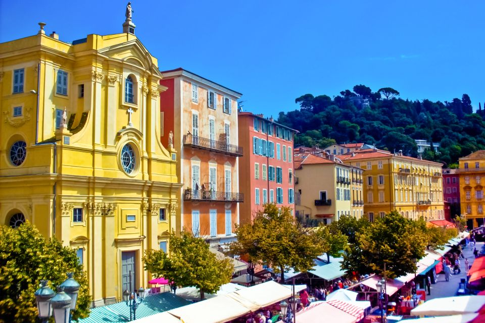
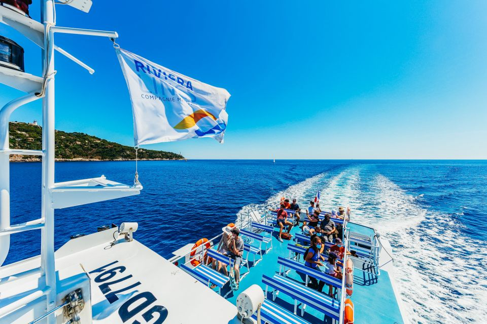
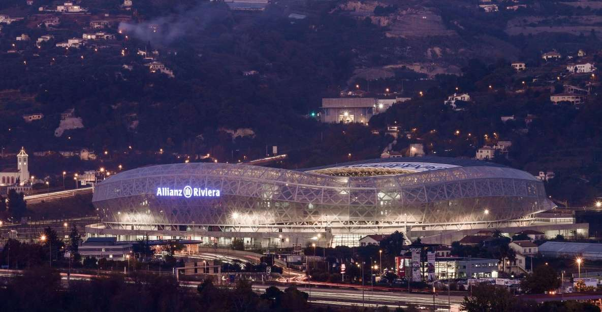

Sheltered in beautiful hills, Nice has astonishing beaches. It is the sunniest place in France
Nice, capital of the Alpes-Maritimes department on the French Riviera, sits on the pebbly shores of the Baie des Anges. Founded by the Greeks and later a retreat for 19th-century European elite, the city has also long attracted artists.
Main attractions in Nice,France
Old Town Treasures Walking Tour
Live the history of Nice on a guided walking tour in the medieval old town known as Vieux-Nice. Learn about the city’s history from its Greek origins through the days of Italian governors.
Round-Trip Transportation to Saint Tropez by Boat
Travel between Nice and St. Tropez by boat with a round-trip ticket. Explore St. Tropez, one of the most charming cities on the French Riviera.
Allianz Stadium and National Sports Museum Tour
Learn about the history of sport through the unique collections on sporting heritage at the National Sports Museum in Nice. Visit the Allianz Riviera Stadium, newly built for UEFA Euro 2016.